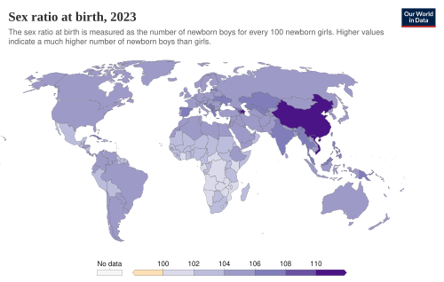
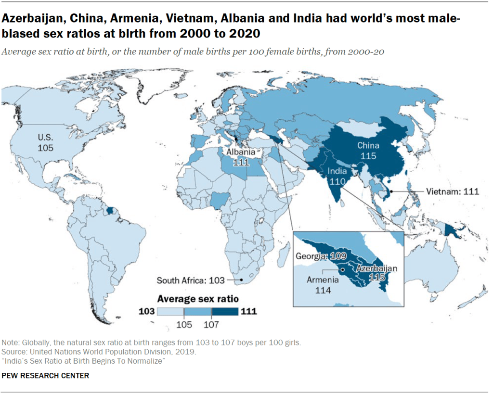

Global population, rounded. Sources at the bottom of this page.


Roughly 50 men / 50 women — but the balance flips hard by age group. 👇
Men start ahead and die earlier. Women win the long game — but the surplus of young men is exactly the group that conflict researchers worry about.
Five slides. Thirty seconds. Use the arrows, swipe, or arrow keys.
Tap a card to open it.
When status feels threatened, support for war-first solutions jumps. Research on political psychology links higher testosterone to stronger "overcompensation" after a perceived challenge — meaning compromise reads as weakness during a standoff.
Lower fear response + lower punishment sensitivity = dangerously high risk tolerance. Leaders riding a streak of wins stop pricing the real cost of escalation.
Biomedical studies report reduced empathic mimicry and weaker reading of emotional cues. Diplomacy runs on nuance; without it, a neighbour's defensive move gets misread as an attack.
Single young men carry the highest baseline testosterone — mating and status competition. Deny a whole generation of them work, housing and marriage, and that drive gets redirected into militias, gangs and civil unrest.
The dual-hormone hypothesis: high testosterone plus high stress flips behaviour from seeking status to defending it, viciously. A declining power can start a defensive war purely to avoid looking weak.
Put it together: frustrated low-status men + collapse of law and order + armed groups that
openly offer "a wife" as a recruitment bonus. Abductions, forced marriage and trafficking
spike. UN agencies document sexual violence as a deliberate tool of control and terror, and
conflict zones see a sharp rise in trafficking because war turns people into commodities.
Plainly: the men's status crisis gets paid for by women's bodies.
"The biological drive for status plus a domestic lack of opportunity creates a reservoir of frustrated men. Armed groups exploit exactly that frustration — promising status, money and women."
Move the sliders. Blue dots are young men, pink are young women. Red dots are men with no status path — the pool armed groups recruit from.
Illustrative model, not a forecast. It just shows how two dials — birth ratio and opportunity — stack up into a very large, very angry number.
Real talk only. Disagree with the page — that's allowed and encouraged.
Another story about what states do to bodies when the rules run out. Two "lethal" doses, seven needles, and a protocol that simply stops at the point it failed.
Read the page →